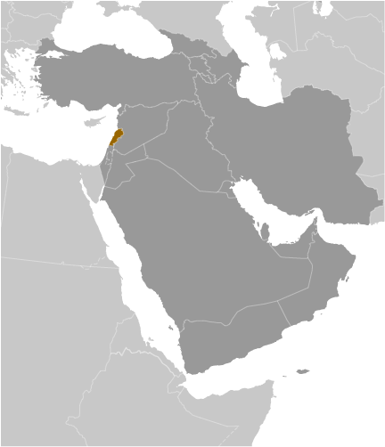
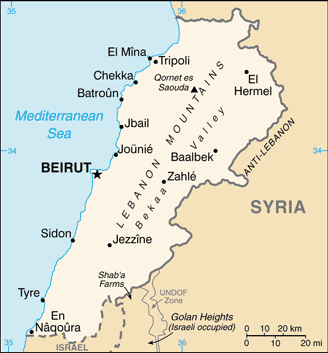
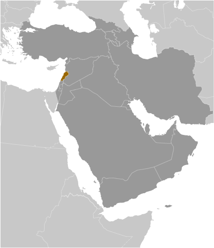
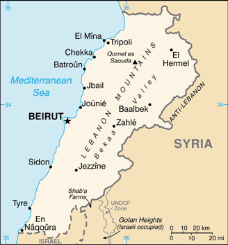

-
Introduction :: Lebanon
-
Background:Following World War I, France acquired a mandate over the northern portion of the former Ottoman Empire province of Syria. The French demarcated the region of Lebanon in 1920 and granted this area independence in 1943. Since independence, the country has been marked by periods of political turmoil interspersed with prosperity built on its position as a regional center for finance and trade. The country's 1975-90 civil war, which resulted in an estimated 120,000 fatalities, was followed by years of social and political instability. Sectarianism is a key element of Lebanese political life. Neighboring Syria has historically influenced Lebanon's foreign policy and internal policies, and its military occupied Lebanon from 1976 until 2005. The Lebanon-based Hizballah militia and Israel continued attacks and counterattacks against each other after Syria's withdrawal, and fought a brief war in 2006. Lebanon's borders with Syria and Israel remain unresolved.
-
Geography :: Lebanon
-
Location:Middle East, bordering the Mediterranean Sea, between Israel and SyriaGeographic coordinates:33 50 N, 35 50 EMap references:Middle EastArea:total: 10,400 sq kmland: 10,230 sq kmwater: 170 sq kmcountry comparison to the world: 169Area - comparative:about one-third the size of MarylandArea comparison map:
 The World Factbook Field Image ModalMiddle East :: Lebanon Print
The World Factbook Field Image ModalMiddle East :: Lebanon Print Image Description
Image Descriptionabout one-third the size of Maryland
Land boundaries:total: 484 kmborder countries (2): Israel 81 km, Syria 403 kmCoastline:225 kmMaritime claims:territorial sea: 12 nmClimate:Mediterranean; mild to cool, wet winters with hot, dry summers; the Lebanon Mountains experience heavy winter snowsTerrain:narrow coastal plain; El Beqaa (Bekaa Valley) separates Lebanon and Anti-Lebanon MountainsElevation:mean elevation: 1,250 melevation extremes: 0 m lowest point: Mediterranean Sea3088 highest point: Qornet es SaoudaNatural resources:limestone, iron ore, salt, water-surplus state in a water-deficit region, arable landLand use:agricultural land: 63.3% (2011 est.)arable land: 11.9% (2011 est.) / permanent crops: 12.3% (2011 est.) / permanent pasture: 39.1% (2011 est.)forest: 13.4% (2011 est.)other: 23.3% (2011 est.)Irrigated land:1,040 sq km (2012)Population distribution:the majority of the people live on or near the Mediterranean coast, and of these most live in and around the capital, Beirut; favorable growing conditions in the Bekaa Valley, on the southeastern side of the Lebanon Mountains, have attracted farmers and thus the area exhibits a smaller population densityNatural hazards:earthquakes; dust storms, sandstormsEnvironment - current issues:deforestation; soil deterioration, erosion; desertification; species loss; air pollution in Beirut from vehicular traffic and the burning of industrial wastes; pollution of coastal waters from raw sewage and oil spills; waste-water managementEnvironment - international agreements:party to: Biodiversity, Climate Change, Climate Change-Kyoto Protocol, Desertification, Hazardous Wastes, Law of the Sea, Ozone Layer Protection, Ship Pollution, Wetlandssigned, but not ratified: Environmental Modification, Marine Life ConservationGeography - note:smallest country in continental Asia; Nahr el Litani is the only major river in Near East not crossing an international boundary; rugged terrain historically helped isolate, protect, and develop numerous factional groups based on religion, clan, and ethnicity -
People and Society :: Lebanon
-
Population:6,100,075 (July 2018 est.)country comparison to the world: 110Nationality:noun: Lebanese (singular and plural)adjective: LebaneseEthnic groups:Arab 95%, Armenian 4%, other 1%
note: many Christian Lebanese do not identify themselves as Arab but rather as descendants of the ancient Canaanites and prefer to be called Phoenicians
Languages:Arabic (official), French, English, ArmenianReligions:Muslim 57.7% (28.7% Sunni, 28.4% Shia, smaller percentages of Alawites and Ismailis), Christian 36.2% (Maronite Catholics are the largest Christian group), Druze 5.2%, very small numbers of Jews, Baha'is, Buddhists, and Hindus (2017 est.)note: data represent the religious affiliation of the citizen population (data do not include Lebanon's sizable Syrian and Palestinian refugee populations) ; 18 religious sects recognized
Age structure:0-14 years: 23.32% (male 728,025 /female 694,453)15-24 years: 16.04% (male 500,592 /female 477,784)25-54 years: 45.27% (male 1,398,087 /female 1,363,386)55-64 years: 8.34% (male 241,206 /female 267,747)65 years and over: 7.03% (male 185,780 /female 243,015) (2018 est.)population pyramid: The World Factbook Field Image ModalMiddle East :: Lebanon Print
The World Factbook Field Image ModalMiddle East :: Lebanon Print Image DescriptionThis is the population pyramid for Lebanon. A population pyramid illustrates the age and sex structure of a country's population and may provide insights about political and social stability, as well as economic development. The population is distributed along the horizontal axis, with males shown on the left and females on the right. The male and female populations are broken down into 5-year age groups represented as horizontal bars along the vertical axis, with the youngest age groups at the bottom and the oldest at the top. The shape of the population pyramid gradually evolves over time based on fertility, mortality, and international migration trends.
Image DescriptionThis is the population pyramid for Lebanon. A population pyramid illustrates the age and sex structure of a country's population and may provide insights about political and social stability, as well as economic development. The population is distributed along the horizontal axis, with males shown on the left and females on the right. The male and female populations are broken down into 5-year age groups represented as horizontal bars along the vertical axis, with the youngest age groups at the bottom and the oldest at the top. The shape of the population pyramid gradually evolves over time based on fertility, mortality, and international migration trends.
For additional information, please see the entry for Population pyramid on the Definitions and Notes page under the References tab.Dependency ratios:total dependency ratio: 47.3 (2015 est.)youth dependency ratio: 35.3 (2015 est.)elderly dependency ratio: 12 (2015 est.)potential support ratio: 8.3 (2015 est.)Median age:total: 31.3 yearsmale: 30.7 yearsfemale: 31.9 years (2018 est.)country comparison to the world: 111Population growth rate:-3.13% (2018 est.)country comparison to the world: 234Birth rate:14.1 births/1,000 population (2018 est.)country comparison to the world: 134Death rate:5.1 deaths/1,000 population (2018 est.)country comparison to the world: 193Net migration rate:-20.3 migrant(s)/1,000 population (2017 est.)country comparison to the world: 219Population distribution:the majority of the people live on or near the Mediterranean coast, and of these most live in and around the capital, Beirut; favorable growing conditions in the Bekaa Valley, on the southeastern side of the Lebanon Mountains, have attracted farmers and thus the area exhibits a smaller population densityUrbanization:urban population: 88.6% of total population (2018)rate of urbanization: 0.75% annual rate of change (2015-20 est.)Major urban areas - population:2.385 million BEIRUT (capital) (2018)Sex ratio:at birth: 1.05 male(s)/female (2017 est.)0-14 years: 1.05 male(s)/female (2017 est.)15-24 years: 1.05 male(s)/female (2017 est.)25-54 years: 1.02 male(s)/female (2017 est.)55-64 years: 0.88 male(s)/female (2017 est.)65 years and over: 0.79 male(s)/female (2017 est.)total population: 1 male(s)/female (2017 est.)Maternal mortality rate:15 deaths/100,000 live births (2015 est.)country comparison to the world: 136Infant mortality rate:total: 7.2 deaths/1,000 live births (2018 est.)male: 7.6 deaths/1,000 live births (2018 est.)female: 6.8 deaths/1,000 live births (2018 est.)country comparison to the world: 160Life expectancy at birth:total population: 77.9 years (2018 est.)male: 76.6 years (2018 est.)female: 79.3 years (2018 est.)country comparison to the world: 66Total fertility rate:1.72 children born/woman (2018 est.)country comparison to the world: 167Contraceptive prevalence rate:54.5% (2009)Health expenditures:6.4% of GDP (2014)country comparison to the world: 96Physicians density:2.38 physicians/1,000 population (2014)Hospital bed density:2.9 beds/1,000 population (2014)Drinking water source:improved: urban: 99% of populationrural: 99% of populationtotal: 99% of populationunimproved: urban: 1% of populationrural: 1% of populationtotal: 1% of population (2015 est.)Sanitation facility access:improved: urban: 80.7% of population (2015 est.)rural: 80.7% of population (2015 est.)total: 80.7% of population (2015 est.)unimproved: urban: 19.3% of population (2015 est.)rural: 19.3% of population (2015 est.)total: 19.3% of population (2015 est.)HIV/AIDS - adult prevalence rate:<.1% (2017 est.)HIV/AIDS - people living with HIV/AIDS:2,200 (2017 est.)country comparison to the world: 130HIV/AIDS - deaths:<100 (2017 est.)Obesity - adult prevalence rate:32% (2016)country comparison to the world: 19Education expenditures:2.5% of GDP (2013)country comparison to the world: 165Literacy:definition: age 15 and over can read and write (2015 est.)total population: 93.9% (2015 est.)male: 96% (2015 est.)female: 91.8% (2015 est.)School life expectancy (primary to tertiary education):total: 11 years (2014)male: 12 years (2014)female: 11 years (2014) -
Government :: Lebanon
-
Country name:conventional long form: Lebanese Republicconventional short form: Lebanonlocal long form: Al Jumhuriyah al Lubnaniyahlocal short form: Lubnanformer: Greater Lebanonetymology: derives from the Semitic root "lbn" meaning "white" and refers to snow-capped Mount LebanonGovernment type:parliamentary republicCapital:name: Beirutgeographic coordinates: 33 52 N, 35 30 Etime difference: UTC+2 (7 hours ahead of Washington, DC, during Standard Time)daylight saving time: +1hr, begins last Sunday in March; ends last Sunday in OctoberAdministrative divisions:8 governorates (mohafazat, singular - mohafazah); Aakkar, Baalbek-Hermel, Beqaa (Bekaa), Beyrouth (Beirut), Liban-Nord (North Lebanon), Liban-Sud (South Lebanon), Mont-Liban (Mount Lebanon), NabatiyeIndependence:22 November 1943 (from League of Nations mandate under French administration)National holiday:Independence Day, 22 November (1943)Constitution:history: drafted 15 May 1926, adopted 23 May 1926 (2017)amendments: proposed by the president of the republic and introduced as a government bill to the National Assembly or proposed by at least 10 members of the Assembly and agreed upon by two-thirds of its members; the proposal is next submitted to the Cabinet for drafting as an amendment; Cabinet approval requires at least two-thirds majority, followed by submission to the National Assembly for discussion and vote; passage requires at least two-thirds majority vote of a required two-thirds quorum of the Assembly membership and promulgation by the president; amended several times, last in 2004 (2019)Legal system:mixed legal system of civil law based on the French civil code, Ottoman legal tradition, and religious laws covering personal status, marriage, divorce, and other family relations of the Jewish, Islamic, and Christian communitiesInternational law organization participation:has not submitted an ICJ jurisdiction declaration; non-party state to the ICCtCitizenship:citizenship by birth: nocitizenship by descent only: the father must be a citizen of Lebanondual citizenship recognized: yesresidency requirement for naturalization: unknownSuffrage:21 years of age; authorized for all men and women regardless of religion; excludes persons convicted of felonies and other crimes or those imprisoned; excludes all military and security service personnel regardless of rankJudicial branch:highest courts: Court of Cassation or Supreme Court (organized into 8 chambers, each with a presiding judge and 2 associate judges); Constitutional Council (consists of 10 members)judge selection and term of office: Court of Cassation judges appointed by Supreme Judicial Council, a 10-member body headed by the chief justice, and includes other judicial officials; judge tenure NA; Constitutional Council members appointed - 5 by the Council of Ministers and 5 by parliament; members serve 5-year termssubordinate courts: Courts of Appeal; Courts of First Instance; specialized tribunals, religious courts; military courtsExecutive branch:chief of state: President Michel AWN (since 31 October 2016)head of government: Prime Minister - Designate Saad al-HARIRI (since 18 December 2016); Deputy Prime Minister Ghassan HASBANI (since 18 December 2016)cabinet: Cabinet chosen by the prime minister in consultation with the president and National Assemblyelections/appointments: president indirectly elected by the National Assembly with two-thirds majority vote in the first round and if needed absolute majority vote in a second round for a 6-year term (eligible for non-consecutive terms); last held on 31 October 2016 (next to be held in 2022); prime minister and deputy prime minister appointed by the president in consultation with the National Assemblyelection results: Michel AWN elected president in second round; National Assembly vote - Michel AWN (FPM) 83; note - in the initial election held on 23 April 2014, no candidate received the required two-thirds vote, and subsequent attempts failed because the Assembly lacked the necessary quorum to hold a vote; the president was finally elected in its 46th attempt on 31 October 2016
note: the Government of Lebanon entered caretaker status in May 2018
Legislative branch:description: unicameral National Assembly or Majlis al-Nuwab in Arabic or Assemblee Nationale in French (128 seats; members directly elected in multi-seat constituencies by proportional representation vote; members serve 4-year terms); in 2017, the Assembly changed the electoral system from majoritarian to proporional representationelections: last held on on 6 May 2018 (next to be held in 2022)election results: percent of vote by coalition - NA; seats by coalition - Amal-Hizballah 35, FPM 24, Future Movement 19, LF 13, PSP 9, Azm Movement 4, other 11, independent 13; composition - men 124, women 4, percent of women 3.1%note: Lebanon’s constitution states the National Assembly cannot conduct regular business until it elects a president when the position is vacant
Political parties and leaders:Amal Movement [Nabih BERRI]
Azm Movement [Najib MIQATI]
Ba’th Arab Socialist Party of Lebanon [Fayiz SHUKR]
Free Patriotic Movement or FPM [Gibran BASSIL]Future Movement Bloc [Sa'ad al-HARIRI]Hizballah [Hassan NASRALLAH]Islamic Actions Front [Sheikh Zuhayr al-JU’AYD]
Kata'ib Party [Sami GEMAYEL]
Lebanese Forces or LF [Samir JA'JA]
Marada Movement [Sulayman FRANJIEH]
Progressive Socialist Party or PSP [Walid JUNBLATT]
Social Democrat Hunshaqian Party [Sabuh KALPAKIAN]Syrian Social Nationalist Party [Ali QANSO]
Tashnag or Armenian Revolutionary Federation [Hagop PAKRADOUNIAN]International organization participation:ABEDA, AFESD, AMF, CAEU, FAO, G-24, G-77, IAEA, IBRD, ICAO, ICC (national committees), ICRM, IDA, IDB, IFAD, IFC, IFRCS, ILO, IMF, IMO, IMSO, Interpol, IOC, IPU, ISO, ITSO, ITU, LAS, MIGA, NAM, OAS (observer), OIC, OIF, OPCW, PCA, UN, UNCTAD, UNESCO, UNHCR, UNIDO, UNRWA, UNWTO, UPU, WCO, WFTU (NGOs), WHO, WIPO, WMO, WTO (observer)Diplomatic representation in the US:chief of mission: Ambassador Gabriel ISSA (since 24 January 2018)chancery: 2560 28th Street NW, Washington, DC 20008telephone: [1] (202) 939-6300FAX: [1] (202) 939-6324consulate(s) general: Detroit, New York, Los AngelesDiplomatic representation from the US:chief of mission: Ambassador Elizabeth H. RICHARD (since 17 May 2016)embassy: Awkar, Lebanon (Awkar facing the Municipality)mailing address: P. O. Box 70-840, Antelias, Lebanon; from US: US Embassy Beirut, 6070 Beirut Place, Washington, DC 20521-6070telephone: [961] (4) 542600, 543600FAX: [961] (4) 544136Flag description:three horizontal bands consisting of red (top), white (middle, double width), and red (bottom) with a green cedar tree centered in the white band; the red bands symbolize blood shed for liberation, the white band denotes peace, the snow of the mountains, and purity; the green cedar tree is the symbol of Lebanon and represents eternity, steadiness, happiness, and prosperityNational symbol(s):cedar tree; national colors: red, white, greenNational anthem:name: "Kulluna lil-watan" (All Of Us, For Our Country!)lyrics/music: Rachid NAKHLE/Wadih SABRAnote: adopted 1927; chosen following a nationwide competition
-
Economy :: Lebanon
-
Economy - overview:
Lebanon has a free-market economy and a strong laissez-faire commercial tradition. The government does not restrict foreign investment; however, the investment climate suffers from red tape, corruption, arbitrary licensing decisions, complex customs procedures, high taxes, tariffs, and fees, archaic legislation, and inadequate intellectual property rights protection. The Lebanese economy is service-oriented; main growth sectors include banking and tourism.
The 1975-90 civil war seriously damaged Lebanon's economic infrastructure, cut national output by half, and derailed Lebanon's position as a Middle Eastern banking hub. Following the civil war, Lebanon rebuilt much of its war-torn physical and financial infrastructure by borrowing heavily, mostly from domestic banks, which saddled the government with a huge debt burden. Pledges of economic and financial reforms made at separate international donor conferences during the 2000s have mostly gone unfulfilled, including those made during the Paris III Donor Conference in 2007, following the July 2006 war. The "CEDRE" investment event hosted by France in April 2018 again rallied the international community to assist Lebanon with concessional financing and some grants for capital infrastructure improvements, conditioned upon long-delayed structural economic reforms in fiscal management, electricity tariffs, and transparent public procurement, among many others.
The Syria conflict cut off one of Lebanon's major markets and a transport corridor through the Levant. The influx of nearly one million registered and an estimated 300,000 unregistered Syrian refugees has increased social tensions and heightened competition for low-skill jobs and public services. Lebanon continues to face several long-term structural weaknesses that predate the Syria crisis, notably, weak infrastructure, poor service delivery, institutionalized corruption, and bureaucratic over-regulation. Chronic fiscal deficits have increased Lebanon’s debt-to-GDP ratio, the third highest in the world; most of the debt is held internally by Lebanese banks. These factors combined to slow economic growth to the 1-2% range in 2011-17, after four years of averaging 8% growth. Weak economic growth limits tax revenues, while the largest government expenditures remain debt servicing, salaries for government workers, and transfers to the electricity sector. These limitations constrain other government spending, limiting its ability to invest in necessary infrastructure improvements, such as water, electricity, and transportation. In early 2018, the Lebanese government signed long-awaited contract agreements with an international consortium for petroleum exploration and production as part of the country’s first offshore licensing round. Exploration is expected to begin in 2019.
GDP (purchasing power parity):$88.25 billion (2017 est.)$86.94 billion (2016 est.)$85.45 billion (2015 est.)note: data are in 2017 dollars
country comparison to the world: 92GDP (official exchange rate):$54.18 billion (2017 est.) (2017 est.)GDP - real growth rate:1.5% (2017 est.)1.7% (2016 est.)0.2% (2015 est.)country comparison to the world: 172GDP - per capita (PPP):$19,600 (2017 est.)$19,500 (2016 est.)$19,300 (2015 est.)note: data are in 2017 dollars
country comparison to the world: 91Gross national saving:-0.7% of GDP (2017 est.)0.7% of GDP (2016 est.)4.5% of GDP (2015 est.)country comparison to the world: 181GDP - composition, by end use:household consumption: 87.6% (2017 est.)government consumption: 13.3% (2017 est.)investment in fixed capital: 21.8% (2017 est.)investment in inventories: 0.5% (2017 est.)exports of goods and services: 23.6% (2017 est.)imports of goods and services: -46.4% (2017 est.)GDP - composition, by sector of origin:agriculture: 3.9% (2017 est.)industry: 13.1% (2017 est.)services: 83% (2017 est.)Agriculture - products:citrus, grapes, tomatoes, apples, vegetables, potatoes, olives, tobacco; sheep, goatsIndustries:banking, tourism, real estate and construction, food processing, wine, jewelry, cement, textiles, mineral and chemical products, wood and furniture products, oil refining, metal fabricatingIndustrial production growth rate:-21.1% (2017 est.)country comparison to the world: 201Labor force:2.166 million (2016 est.)note: excludes as many as 1 million foreign workers and refugees
country comparison to the world: 123Labor force - by occupation:agriculture: 39% NA (2009 est.)industry: NAservices: NAUnemployment rate:9.7% (2007)country comparison to the world: 138Population below poverty line:28.6% (2004 est.)Budget:revenues: 11.62 billion (2017 est.)expenditures: 15.38 billion (2017 est.)Taxes and other revenues:21.5% (of GDP) (2017 est.)country comparison to the world: 136Budget surplus (+) or deficit (-):-6.9% (of GDP) (2017 est.)country comparison to the world: 193Public debt:146.8% of GDP (2017 est.)145.5% of GDP (2016 est.)note: data cover central government debt and exclude debt instruments issued (or owned) by government entities other than the treasury; the data include treasury debt held by foreign entities; the data include debt issued by subnational entities, as well as intragovernmental debt; intragovernmental debt consists of treasury borrowings from surpluses in the social funds, such as for retirement, medical care, and unemployment
country comparison to the world: 4Fiscal year:calendar yearInflation rate (consumer prices):4.5% (2017 est.)-0.8% (2016 est.)country comparison to the world: 167Central bank discount rate:10% (31 December 2017)10% (31 December 2016)country comparison to the world: 22Commercial bank prime lending rate:8.29% (31 December 2017 est.)8.35% (31 December 2016 est.)country comparison to the world: 103Stock of narrow money:$7.047 billion (31 December 2017 est.)$6.739 billion (31 December 2016 est.)country comparison to the world: 90Stock of broad money:$7.047 billion (31 December 2017 est.)$6.739 billion (31 December 2016 est.)country comparison to the world: 92Stock of domestic credit:$108.2 billion (31 December 2017 est.)$104 billion (31 December 2016 est.)country comparison to the world: 55Current account balance:-$12.37 billion (2017 est.)-$11.18 billion (2016 est.)country comparison to the world: 193Exports:$3.524 billion (2017 est.)$3.689 billion (2016 est.)country comparison to the world: 123Exports - partners:China 13%, UAE 9.9%, South Africa 7.5%, Saudi Arabia 6.5%, Syria 6.5%, Iraq 5.8%, Turkey 4.6% (2017)Exports - commodities:jewelry, base metals, chemicals, consumer goods, fruit and vegetables, tobacco, construction minerals, electric power machinery and switchgear, textile fibers, paperImports:$18.34 billion (2017 est.)$17.71 billion (2016 est.)country comparison to the world: 81Imports - commodities:petroleum products, cars, medicinal products, clothing, meat and live animals, consumer goods, paper, textile fabrics, tobacco, electrical machinery and equipment, chemicalsImports - partners:China 10.2%, Italy 8.9%, Greece 7%, Germany 6.6%, US 6.3%, Turkey 4.5%, Egypt 4.2% (2017)Reserves of foreign exchange and gold:$55.42 billion (31 December 2017 est.)$54.04 billion (31 December 2016 est.)country comparison to the world: 37Debt - external:$39.3 billion (31 December 2017 est.)$36.6 billion (31 December 2016 est.)country comparison to the world: 76Stock of direct foreign investment - at home:$61.02 billion (2016)$58.46 billion (2015)country comparison to the world: 56Stock of direct foreign investment - abroad:$13.46 billion (2016)$12.69 billion (2015)country comparison to the world: 61Exchange rates:Lebanese pounds (LBP) per US dollar -1,507.5 (2017 est.)1,507.5 (2016 est.)1,507.5 (2015 est.)1,507.5 (2014 est.)1,507.5 (2013 est.) -
Energy :: Lebanon
-
Electricity access:electrification - total population: 100% (2016)Electricity - production:17.59 billion kWh (2016 est.)country comparison to the world: 82Electricity - consumption:15.71 billion kWh (2016 est.)country comparison to the world: 77Electricity - exports:0 kWh (2016 est.)country comparison to the world: 157Electricity - imports:69 million kWh (2016 est.)country comparison to the world: 104Electricity - installed generating capacity:2.346 million kW (2016 est.)country comparison to the world: 110Electricity - from fossil fuels:88% of total installed capacity (2016 est.)country comparison to the world: 59Electricity - from nuclear fuels:0% of total installed capacity (2017 est.)country comparison to the world: 126Electricity - from hydroelectric plants:11% of total installed capacity (2017 est.)country comparison to the world: 114Electricity - from other renewable sources:1% of total installed capacity (2017 est.)country comparison to the world: 158Crude oil - production:0 bbl/day (2017 est.)country comparison to the world: 160Crude oil - exports:0 bbl/day (2015 est.)country comparison to the world: 153Crude oil - imports:0 bbl/day (2015 est.)country comparison to the world: 151Crude oil - proved reserves:0 bbl (1 January 2018 est.)country comparison to the world: 156Refined petroleum products - production:0 bbl/day (2015 est.)country comparison to the world: 164Refined petroleum products - consumption:154,000 bbl/day (2016 est.)country comparison to the world: 65Refined petroleum products - exports:0 bbl/day (2015 est.)country comparison to the world: 170Refined petroleum products - imports:151,100 bbl/day (2015 est.)country comparison to the world: 41Natural gas - production:0 cu m (2017 est.)country comparison to the world: 156Natural gas - consumption:0 cu m (2017 est.)country comparison to the world: 166Natural gas - exports:0 cu m (2017 est.)country comparison to the world: 137Natural gas - imports:0 cu m (2017 est.)country comparison to the world: 147Natural gas - proved reserves:0 cu m (1 January 2014 est.)country comparison to the world: 157Carbon dioxide emissions from consumption of energy:23.36 million Mt (2017 est.)country comparison to the world: 83
-
Communications :: Lebanon
-
Telephones - fixed lines:total subscriptions: 1,816,262 (July 2016 est.)subscriptions per 100 inhabitants: 17 (July 2016 est.)country comparison to the world: 60Telephones - mobile cellular:total subscriptions: 4,890,534 (July 2016 est.)subscriptions per 100 inhabitants: 79 (July 2016 est.)country comparison to the world: 122Telephone system:general assessment: new landlines and fibre-optic networks installed along with faster DSL in 2017; two mobile-cellular networks provide good service,with 4G LTE services; preparing for 5G service; future improvements to fibre-optic infrastructure for total nation coverage in 2020 (2017)domestic: fixed-line 17 per 100 and 79 per 100 for mobile-cellular subscriptions (2017)international: country code - 961; submarine cable links to Cyprus, Egypt, and Syria; satellite earth stations - 2 Intelsat (1 Indian Ocean and 1 Atlantic Ocean); coaxial cable to Syria (2016)Broadcast media:7 TV stations, 1 of which is state owned; more than 30 radio stations, 1 of which is state owned; satellite and cable TV services available; transmissions of at least 2 international broadcasters are accessible through partner stations (2007)Internet country code:.lbInternet users:total: 4,747,542 (July 2016 est.)percent of population: 76.1% (July 2016 est.)country comparison to the world: 79Broadband - fixed subscriptions:total: 1.3 million (2017 est.)subscriptions per 100 inhabitants: 21 (2017 est.)country comparison to the world: 65
-
Transportation :: Lebanon
-
National air transport system:number of registered air carriers: 2 (2015)inventory of registered aircraft operated by air carriers: 21 (2015)annual passenger traffic on registered air carriers: 2,583,274 (2015)annual freight traffic on registered air carriers: 53,902,026 mt-km (2015)Civil aircraft registration country code prefix:OD (2016)Airports:8 (2013)country comparison to the world: 161Airports - with paved runways:total: 5 (2017)over 3,047 m: 1 (2017)2,438 to 3,047 m: 2 (2017)1,524 to 2,437 m: 1 (2017)under 914 m: 1 (2017)Airports - with unpaved runways:total: 3 (2013)914 to 1,523 m: 2 (2013)under 914 m: 1 (2013)Heliports:1 (2013)Pipelines:88 km gas (2013)Railways:total: 401 km (2017)standard gauge: 319 km 1.435-m gauge (2017)narrow gauge: 82 km 1.050-m gauge (2017)
note: rail system is still unusable due to damage sustained from fighting in the 1980s and in 2006
country comparison to the world: 119Roadways:total: 6,970 km (includes 170 km of expressways) (2005)country comparison to the world: 147Merchant marine:total: 54 (2017)by type: bulk carrier 1, container ship 1, general cargo 39, oil tanker 1, other 12 (2017)country comparison to the world: 113Ports and terminals:major seaport(s): Beirut, Tripolicontainer port(s) (TEUs): Beirut (1,305,038) (2017) -
Military and Security :: Lebanon
-
Military expenditures:2.91% of GDP (2017)2.96% of GDP (2016)2.79% of GDP (2015)country comparison to the world: 30Military branches:Lebanese Armed Forces (LAF): Lebanese Army (Al Jaysh al Lubnani), Lebanese Navy (Al Quwwat al Bahiriyya al Lubnaniya), Lebanese Air Force (Al Quwwat al Jawwiya al Lubnaniya) (2018)Military service age and obligation:17-30 years of age for voluntary military service; 18-24 years of age for officer candidates; no conscription (2013)
-
Terrorism :: Lebanon
-
Terrorist groups - home based:Abdallah Azzam Brigades (AAB):
aim(s): enhance its networks in Lebanon to combat Shia Muslim influence in the country; seeks to disrupt Israel's economy and its efforts to establish security; attack Western interests in the Middle East
area(s) of operation: headquartered in the Ayn al-Hilwah Palestinian refugee camp near Sidon in the south (April 2018)Asbat al-Ansar (AAA):
aim(s): overthrow the Lebanese Government, rid Lebanon of Western influences, destroy the state of Israel to seize Jerusalem and, ultimately, establish an Islamic state in the Levant region
area(s) of operation: headquartered in the Ayn al-Hilwah Palestinian refugee camp near Sidon in the south
note: essentially defunct, assessed to have a few dozen members as of 2017 (April 2018)Hizballah:
aim(s): accrue military resources and political power and defend its position of strength in Lebanon; destroy the state of Israel; counter the West; provide paramilitary support to Syrian President Bashar al-ASAD's regime
area(s) of operation: headquartered in Beirut with a significant presence in the Bekaa Valley and Southern Lebanon
note: remains the most capable armed group in the country, enjoying support among many Lebanese Shia and some Christians; receives considerable support from Iran (April 2018)Islamic State of Iraq and ash-Sham (ISIS) network in Lebanon: aim(s): replace the Lebanese Government with an Islamic state and implement ISIS's strict interpretation of sharia
area(s) of operation: operational primarily in the east along the border with Syria; also maintains a presence in Ayn al-Hilweh refugee camp (April 2018)Terrorist groups - foreign based:al-Aqsa Martyrs Brigade (AAMB):
aim(s): bolster its recruitment presence in Lebanon and, ultimately, establish a Palestinian state comprising the West Bank, Gaza Strip, and Jerusalem
area(s) of operation: recruits youths in Palestinian refugee camps (April 2018)al-Nusrah Front/al-Qa'ida:
aim(s): bolster networks in Lebanon and, ultimately, establish a regional Islamic caliphate
area(s) of operation: in the east in the Bekaa Valley and along the Lebanon-Syria border; targets Lebanese Government institutions, security forces, and Lebanese civilians (April 2018)Palestine Liberation Front (PLF):
aim(s): enhance its networks in Lebanon and, ultimately, destroy the state of Israel to establish a secular, Marxist Palestinian state with Jerusalem as its capital
area(s) of operation: maintains a recruitment and training presence in many refugee camps (April 2018)PFLP-General Command (PFLP-GC):
aim(s): enhance recruitment and operational networks in Lebanon
area(s) of operation: recruits young men living in Palestinian refugee camps, including camps in the Bekaa Valley (April 2018)Popular Front for the Liberation of Palestine (PFLP):
aim(s): enhance its recruitment network in Lebanon and, ultimately, establish a secular, Marxist Palestinian state
area(s) of operation: recruits youths residing in the country's Palestinian refugee camps (April 2018) -
Transnational Issues :: Lebanon
-
Disputes - international:lacking a treaty or other documentation describing the boundary, portions of the Lebanon-Syria boundary are unclear with several sections in disputesince 2000, Lebanon has claimed Shab'a Farms area in the Israeli-occupied Golan Heightsthe roughly 2,000-strong UN Interim Force in Lebanon has been in place since 1978Refugees and internally displaced persons:refugees (country of origin): 5,695 (Iraq), 463,664 (Palestinian refugees) (2017), 950,334 (Syria) (2018)IDPs: 11,000 (2007 Lebanese security forces' destruction of Palestinian refugee camp) (2017)stateless persons: undetermined (2016); note - tens of thousands of persons are stateless in Lebanon, including many Palestinian refugees and their descendants, Syrian Kurds denaturalized in Syria in 1962, children born to Lebanese women married to foreign or stateless men; most babies born to Syrian refugees, and Lebanese children whose births are unregisteredTrafficking in persons:current situation: Lebanon is a source and destination country for women and children subjected to forced labor and sex trafficking and a transit point for Eastern European women and children subjected to sex trafficking in other Middle Eastern countries; women and girls from South and Southeast Asia and an increasing number from East and West Africa are recruited by agencies to work in domestic service but are subject to conditions of forced labor; under Lebanon’s artiste visa program, women from Eastern Europe, North Africa, and the Dominican Republic enter Lebanon to work in the adult entertainment industry but are often forced into the sex trade; Lebanese children are reportedly forced into street begging and commercial sexual exploitation, with small numbers of Lebanese girls sex trafficked in other Arab countries; Syrian refugees are vulnerable to forced labor and prostitutiontier rating: Tier 2 Watch List – Lebanon does not fully comply with the minimum standards for the elimination of trafficking; however, it is making significant efforts to do so; in 2014, Lebanon was granted a waiver from an otherwise required downgrade to Tier 3 because its government has a written plan that, if implemented would constitute making significant efforts to bring itself into compliance with the minimum standards for the elimination of trafficking; law enforcement efforts in 2014 were uneven; the number of convicted traffickers increased, but judges lack of familiarity with anti-trafficking law meant that many offenders were not brought to justice; the government relied heavily on an NGO to identify and provide service to trafficking victims; and its lack of thoroughly implemented victim identification procedures resulted in victims continuing to be arrested, detained, and deported for crimes committed as a direct result of being trafficked (2015)Illicit drugs:Lebanon is a transit country for hashish, cocaine, heroin, and fenethylene; fenethylene, cannabis, hashish, and some opium are produced in the Bekaa Valley; small amounts of Latin American cocaine and Southwest Asian heroin transit country on way to European markets and for Middle Eastern consumption; money laundering of drug proceeds fuels concern that extremists are benefiting from drug trafficking
Middle East ::
Lebanon